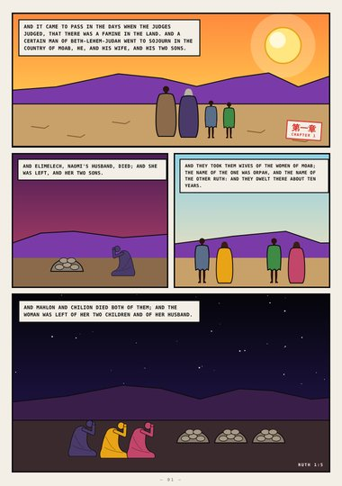
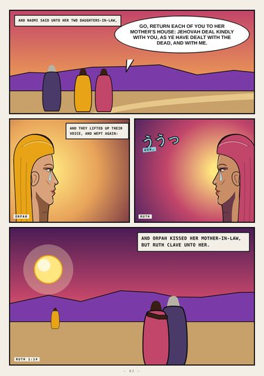
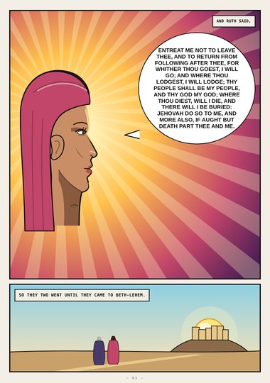
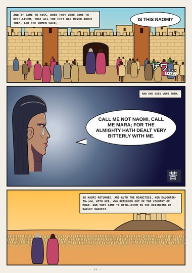
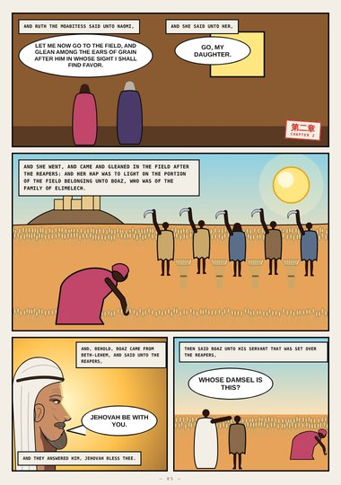
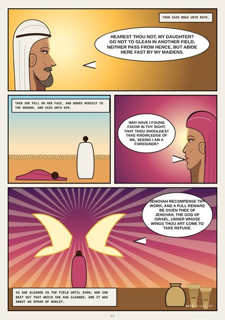
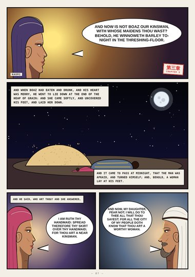
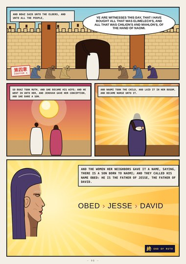

Ruth (digest) · Book One · Ruth 1–4
Whither Thou Goest
The famine and Moab, Orpah's kiss and Ruth's vow, Naomi who called herself Mara, the field of Boaz, the threshing-floor at midnight, and Obed, the father of Jesse, the father of David.
Digest edition: an early, abridged first draft (highlights only). The full edition is replacing it.
Start reading ›Pages
 CoverCoverRuth 1–4
CoverCoverRuth 1–4
Page 1When the Judges JudgedRuth 1:1–5
Page 2Return, Each of YouRuth 1:8–14
Page 3Whither Thou GoestRuth 1:16–19
Page 4Call Me MaraRuth 1:19–22
Page 5The Field of BoazRuth 2:2–5
Page 6Under Whose WingsRuth 2:8–17
Page 7The Threshing-floorRuth 3:2–11
Page 8ObedRuth 4:9–17